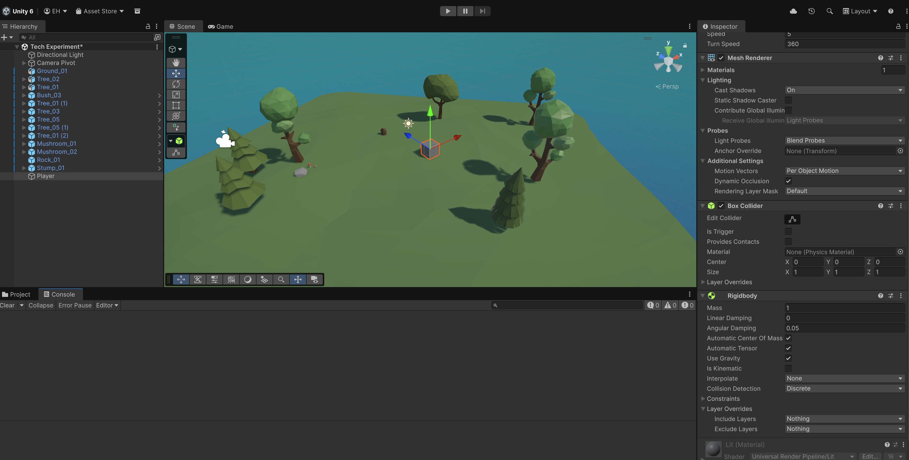
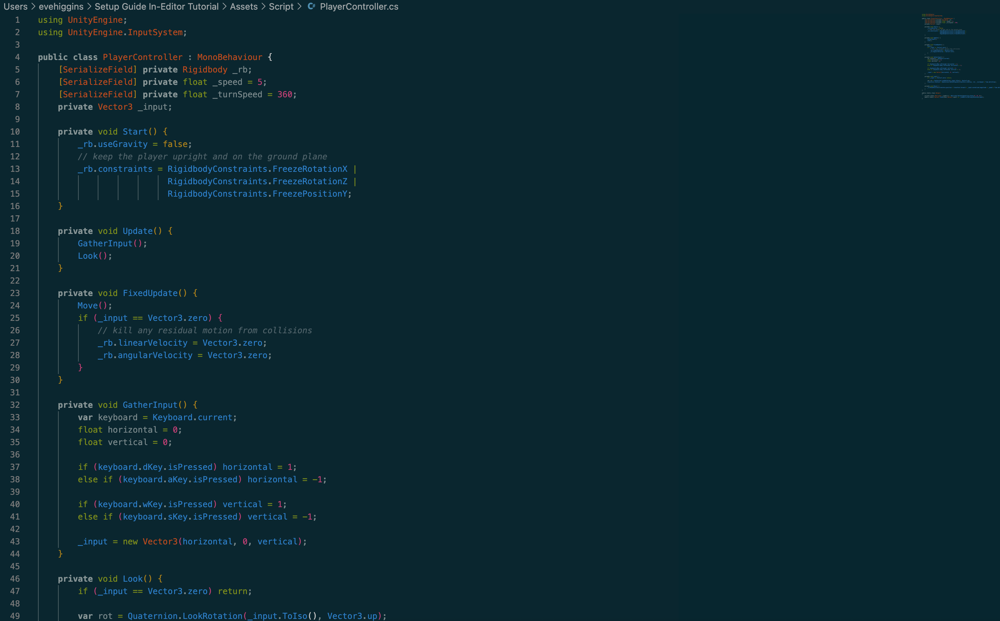
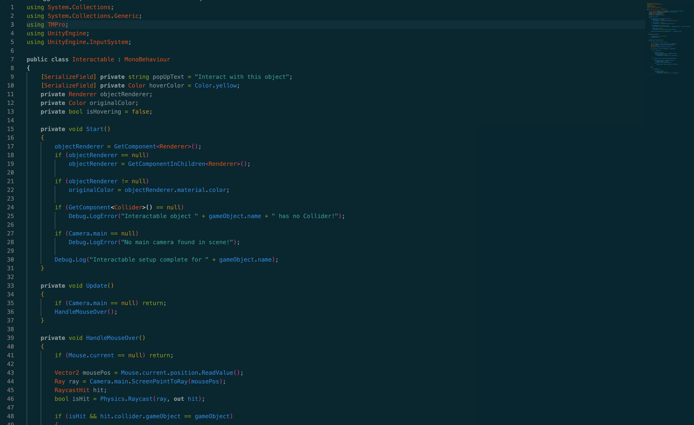

Lab 6
05/March/2026
What I Learned
Technical Experiment
My technical experiment involved exploring Unity and experimenting with creating interactive 3D environments, specifically focusing on devloping an interactable object which has a pop-up.
Unity Discussion
For my tech experiment, I explored how to create a pop-up dialogue when the player interacts with an object in Unity. Since I was new to the software, the first step was learning the basics of creating and navigating a scene in Unity. Once I became familiar with the interface, I downloaded several free assets from the Unity Asset Store to help build a simple environment for testing the interaction. After importing the assets, I arranged the objects and materials within the scene. I then configured an isometric camera setup to match the visual style we are aiming for in our game. This required creating two separate cameras and parenting one to the other so the camera would maintain a consistent pivot angle while still allowing movement. I also turned off the perspective to achieve the isometric look. Next, I worked on coding basic character movement. This step required a lot of troubleshooting and watching tutorials. For example, early on the cube character was affected too strongly by gravity and would drift off the screen, and collisions with objects sometimes caused it to launch unexpectedly. Resolving these issues involved adjusting the physics settings and refining the movement script. Finally, I implemented the interaction mechanic. I added a hover effect to the interactive object (a tree stump), which changes color when the player moves the cursor over it. When the player clicks the object, a dialogue box appears on screen. Moving forward, I still need to refine this system by learning how to properly code an exit button for the dialogue box and potentially expanding the interaction into a hub that could launch a mini-game.
Gameplay Recording
Project Screenshots



Reflection
I struggled quite a bit with this experiment because I was trying to learn a lot about Unity in a very short period of time. It often felt like every time I made progress, something else would break and I would end up taking two steps back. Small issues like physics settings, collisions, or object assignments would suddenly cause new problems, which meant I spent a lot of time troubleshooting. It was also interesting trying to use AI as part of the process. Sometimes it was helpful, but other times it couldn’t really figure out where the problem in my code or object setup was. In those situations I had to step back and troubleshoot on my own, searching for answers and experimenting until something finally worked. Even though it was frustrating at times, it was also really rewarding when I was able to figure things out myself. Solving those problems helped me understand Unity much better than I did at the beginning of the experiment. While it probably wasn’t the most efficient use of my time, the trial-and-error process helped me learn how the different parts of Unity actually fit together, which I think will make it easier to work with in the future.